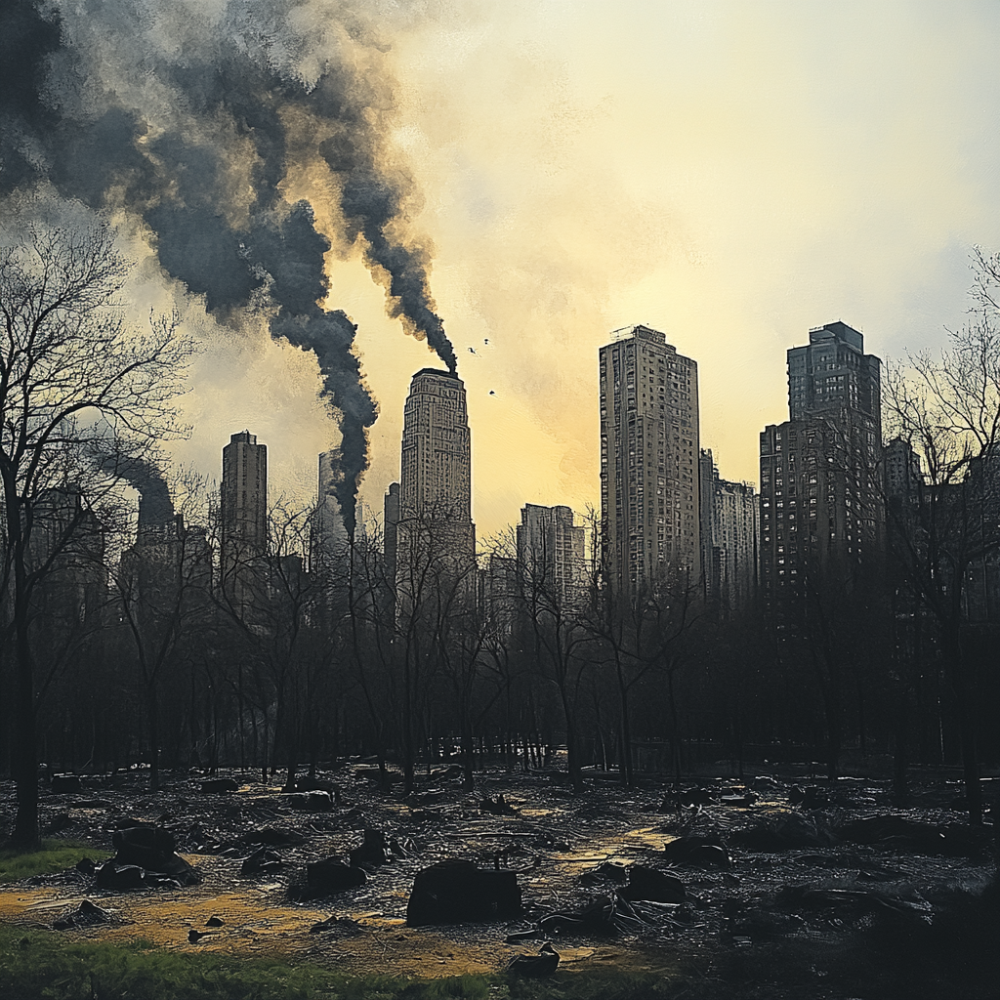
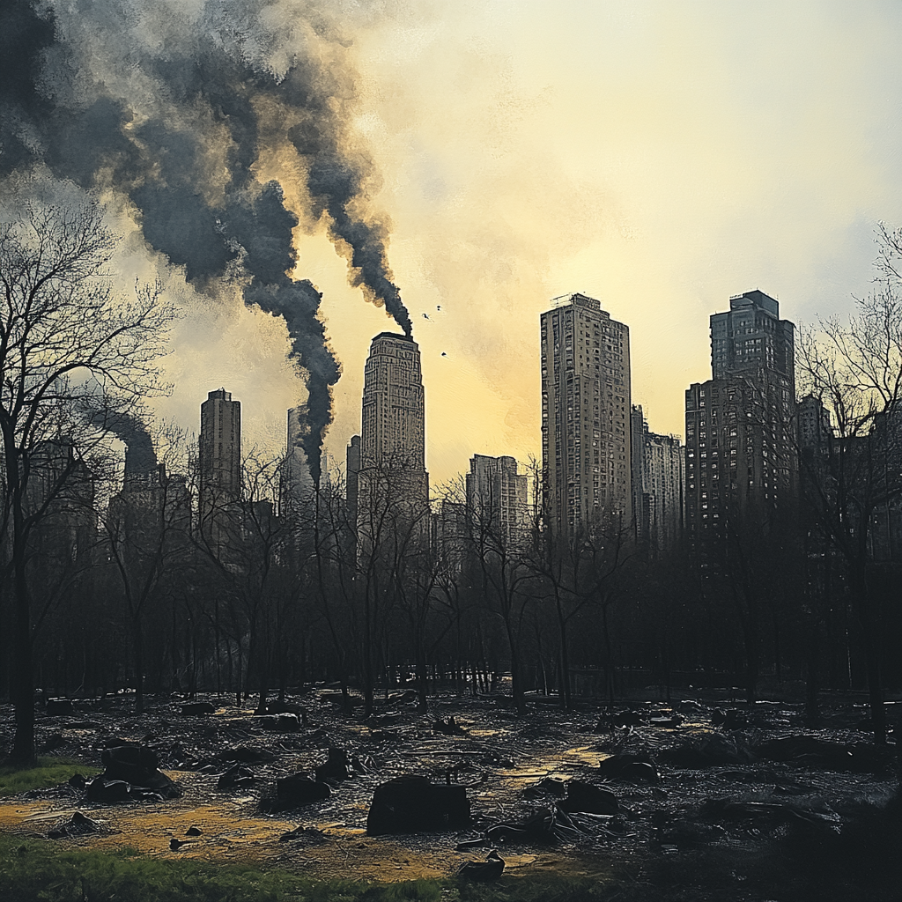

Central Park is an iconic urban park in New York City, providing an oasis of nature amidst the bustling metropolis.
Spanning 843 acres, it was designed by Frederick Law Olmsted and Calvert Vaux, and has become a landmark symbol of city parks worldwide.
Central Park is a destination for recreation, relaxation, and culture, attracting millions of visitors every year.
The Future of Central Park:
Central Park is expected to continue its legacy as a haven for nature and urban life, with plans for sustainability and green space conservation.
Future developments may include eco-friendly infrastructure, increased biodiversity efforts, and new interactive areas for education and community engagement.
However, if humans continue to ignore the looming threats of global warming and pollution, this precious green space could become tarnished and severely impacted by environmental damage.